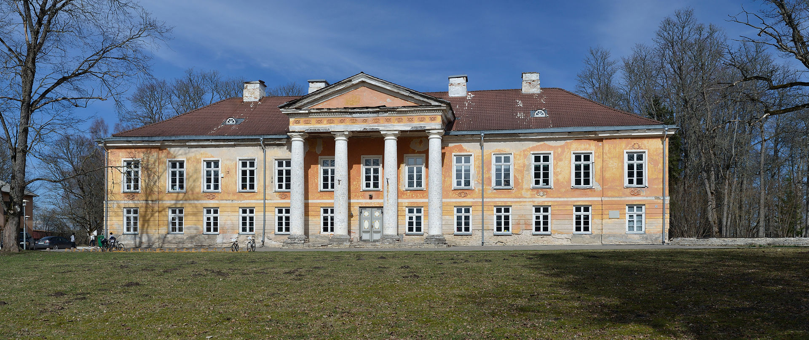
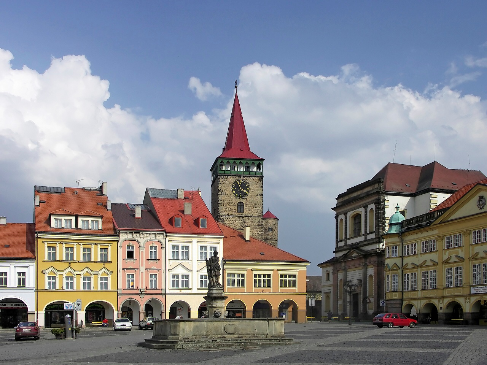
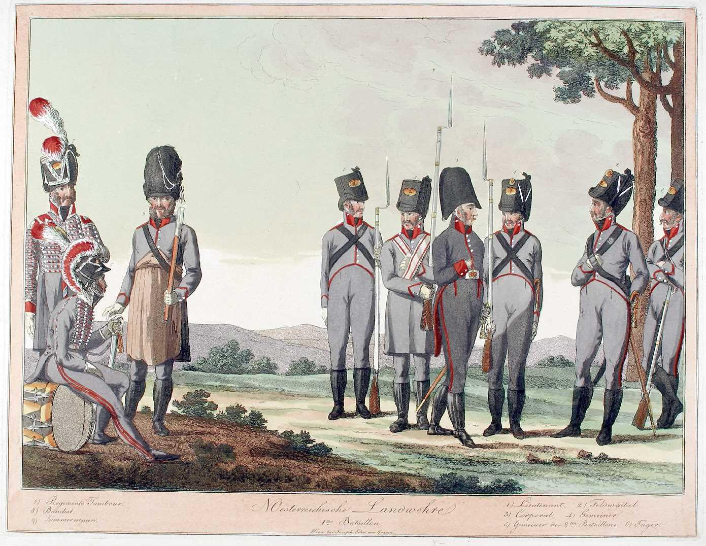

휴전 (12) - 오스트리아의 준비 상황
게시: 2023-09-18T06:30:39+09:00
6월 27일의 드레스덴 회견이 대실패로 끝난 것은 오스트리아로서는 매우 당혹스러운 사건이었습니다. 메테르니히의 임기응변으로 일단 나폴레옹을 7월 5일의 프라하 회담에 끌어들임으로써 당장 파국은 피했으나, 이는 어디까지나 시간 벌기에 불과했습니다. 당장 연합국들에게 체면이 서지 않는 것은 작은 일에 불과했습니다. 진짜 문제는 이제 오스트리아도 전쟁에 뛰어들어 피를 보게 되었는데, 아직 전쟁 준비가 완료되지 않았다는 것이었습니다. 그리고 더 큰 문제도 있었습니다. 이제 전투가 재개되면, 나폴레옹의 주된 공격 방향은 바로 오스트리아를 향할 것이라는 것이었습니다. 메테르니히가 드레스덴으로 떠나기 훨씬 이전부터, 러시아와 프로이센, 그리고 오스트리아의 장군들은 이미 전투 재개를 가정하고 이런저런 작전안을 논의하고 있었습니다. 아직 오스트리아의 참전이 결정되지 않은 마당에 연합군의 병력 규모와 작전 계획을 오스트리아와 공유하는 것은 매우 조심스러운 일이었으나, 러시아군 사령관 바클레이는 오스트리아가 결국 참전할 수 밖에 없을 것이라고 확신하고 있었고 짜르 알렉산드르도 그에 동의했기 때문에 연합군은 비교적 자유롭게 오스트리와와 그런 작전안을 깊숙한 부분까지 논의했습니다.

(톨(Karl Wilhelm von Toll)입니다. 나폴레옹보다 8세 연하였던 그는 에스토니아 귀족으로서, 그의 조상은 스웨덴에서 왔지만 사실 근본부터 따져보면 그 선대는 15세기 경에 스웨덴에 정착한 네덜란드 가문이었습니다. 그의 조상 중 하나가 러시아의 뇌제(雷帝) 이반(Ivan the Terrible)에게 가는 스웨덴 대사로 일하여 공을 세웠기 때문에 당시 스웨덴 땅이던 에스토니아에 봉토를 받은 것이 인연이 되어 러시아 가문이 된 것이었습니다. 결국 러시아에 어쨌거나 톨은 러시아군 내에서 미움을 받던 소위 '독일인'들 중 하나였지만 그는 군 생활 시작을 바로 쿠투조프 밑에서 시작하는 행운을 누렸기 때문에 쿠투조프의 심복으로 분류되었고, 그 능력을 인정받아 쿠투조프의 병사 이후에도 중용되었습니다. 나폴레옹 전쟁 이후 그는 오스만 투르크 전선 및 폴란드 반란 전쟁에서 활약했고, 알렉산드르의 뒤를 이어 짜르가 된 니콜라이 1세에 의해 공작에 봉해집니다.)

(톨이 살던 에스토니아 야르바(Järva) 지방에 있는 야르퀼라(Aruküla) 관(館)입니다. 톨이 아직 어린 나이이던 1782년~89년 사이에 지어진 건물로서, 톨은 은퇴 이후 여기서 살았고, 그의 시신도 이 장원의 교회당에 묻혀 있습니다.) 먼저 안을 냈던 것은 러시아군의 젊은 톨(Karl Wilhelm von Toll) 장군이었습니다. 그는 휴전이 종료되는 원래 날짜였던 7월 20일까지 러시아-프로이센 연합군은 병력을 15만으로 늘릴 수 있고 오스트리아군은 12만의 병력을 투입할 수 있을 것이지만, 그에 비해 프랑스군은 16만을 동원할 수 있을 것이라고 추정했습니다. 그렇게 연합군 측에게 있어 장미빛인 전망에 근거하여, 그는 나폴레옹이 슈바이트니츠의 연합군을 공격할 경우 오스트리아군이 괴를리츠(Gorlitz)로 진출하여 나폴레옹의 후방을 노릴 수 있고, 반대로 나폴레옹이 보헤미아의 오스트리아군을 공격한다면 슈바이트니츠의 연합군이 다시 나폴레옹의 후방을 노릴 수 있다는 그림을 그렸습니다. 기본적으로, 톨의 작전안은 하나의 부대가 나폴레옹과 멱살을 잡고 뒹구는 동안, 다른 부대가 나폴레옹의 후방을 노린다는 것이었습니다. 바클레이는 약간 투박했던 톨의 이 작전안을 가다듬어 3가지 시나리오를 갖춘 작전안을 작성한 뒤, 톨이 직접 이 작전 계획서를 들고 기츠쉰(Gitschin)에 위치한 오스트리아군 사령부을 방문하여 슈바르첸베르크에게 전달했습니다. 각 시나리오의 내용을 요약하면 다음과 같았습니다.

(기츠쉰은 물론 독일어 발음이고 체코어로는 이췬느(Jičín) 정도로 발음됩니다. 프라하 북동쪽으로 약 80km 지점에 있는 작은 도시로서 지금도 인구가 1만6천 정도에 불과합니다. 이 작은 도시가 발달하게 된 계기는 30년 당시 가톨릭 동맹에서 맹활약한 신성로마제국 장군인 발렌슈타인(Albrecht von Wallenstein)에게 이 도시가 봉토로 주어진 것이었다고 합니다. 발렌슈타인은 이 도시에 주조소를 건립하는 등 자신의 봉토의 중심지로 개발했고, 덕분에 이렇게 아름다운 소도시가 되었습니다.) 시나리오1) 나폴레옹이 엘베 강 일대로 병력을 물러서게 한 뒤 오스트리아 보헤미아로 선제 공격을 감행 --> 연합군은 비트겐슈타인의 2만5천 러시아군을 보헤미아로 보내 오스트리아군과 합류시켜 총 14만5천의 병력으로 나폴레옹과 대치하게 한 뒤, 슈바이트니츠의 연합군은 드레스덴으로 진격하여 나폴레옹의 후방을 공격. 시나리오2) 엘베 강과 오데르 강 사이에 나폴레옹이 병력을 집결시키고 방어에 들어감 --> 연합군이 슐레지엔으로부터 서진하는 동안 오스트리아군이 북진하여 나폴레옹을 협격. 시나리오3) 나폴레옹이 슐레지엔의 연합군을 향해 진격 --> 연합군이 그를 막아내는 동안 오스트리아군이 나폴레옹의 후방으로 진격하여 앞뒤에서 나폴레옹을 협격. 오스트리아군에서는 라데츠키(Radetsky)가 프라하 메모라는 이름의 작전안을 작성해놓고 있었습니다. 라데츠키는 좀더 신중하게 추정하여, 나폴레옹은 휴전 종료 때까지 약 24만의 병력을 모을 수 있을 것이며, 휴전이 종료되면 그 중 5~6만을 슐레지엔에 남겨 연합군을 견제하게 한 뒤 나머지 17~18만으로는 오스트리아 보헤이마 공격에 나설 것으로 예상했습니다. 라데츠키는 그 공세에 대해 준비할 것이 아니라, 오히려 오스트리아가 먼저 공세를 취해야 하며, 이를 위해 보헤미아에 최소 15만의 병력을 동원해야 한다고 주장했습니다. 병력 동원을 위해서는 각 연대의 예비 대대도 모두 소집할 것과 함께 민병대라고 할 수 있는 국민방위군(landwehr) 동원까지 요구했습니다. 여기서 주목할 점은 2가지입니다. 먼저, 러시아-프로이센측이나 오스트리아 측이나, 나폴레옹은 먼저 오스트리아를 공격할 가능성을 매우 높게 보고 있었다는 점입니다. 즉, 메테르니히의 중재가 실패할 경우 나폴레옹의 공세를 온 몸으로 받아내야 하는 것은 여태까지 피 한 방울 흘리지 않고 편히 지내던 오스트리아가 될 것이라는 뜻이었습니다. 두 번째로 주목할 점은 라데츠키의 이 프라하 메모의 작성 날짜입니다. 이 메모에 적힌 날짜는 6월 10일이었는데, 뜻하는 바는 그때까지도 오스트리아는 아직 병력 동원이 안 되어 있다는 것입니다. 실제로 오스트리아군은 4년 전인 제5차 대불동맹전쟁, 즉 아스페른-에슬링과 바그람 전투에서 심각한 피해를 입은 뒤 아직 완전한 회복을 못하고 있었습니다. 실은 4년 전의 그 전쟁도 억지로 일으킨 것이었습니다. 기억들 하시겠지만 당시 오스트리아는 아우스테를리츠의 원한을 갚기 위해 군비를 무리하게 증강시켰었는데, 이미 쪼그라든 오스트리아 제국의 재정 상태로는 그렇게 확장된 상비군의 유지가 어려웠습니다. 때마침 스페인에서의 성공적인 반(反)나폴레옹 투쟁에 고무된 오스트리아가, 힘들게 편성한 군대가 돈이 없어 와해되기 전에 한번 싸워나 보자는 심정으로 벌인 것이 바로 제5차 대불동맹전쟁이었습니다. 그런 상태에서 패배까지 당해 제국이 더욱 쪼그라들자 오스트리아군은 역사상 최저 수준으로 축소될 수 밖에 없었습니다. 주러시아 영국 대사 캐쓰카트에 의하면 특히 바다로부터 단절되어 해상무역을 할 수 없던 오스트리아는 군수품 마련에 심각한 어려움을 겪고 있어서, 원래 참전하기로 약속했던 6월 10일은 고사하고 7월 말까지 불과 6만의 군대조차도 제대로 출전시키기 어려운 상황이었다고 합니다.

(그림은 저지대 오스트리아(Niederösterreich, Enns 강 하류 지역이라서 이렇게 불림)의 국민방위군입니다. 유럽의 국민방위군(Landwehr)은 정규군이 아니라 일종의 민병대로서, 어디까지나 향토방위 및 치안 유지 임무에만 투입되었습니다만, 유사시 정규군의 보조 역할을 하기도 했습니다. 오스트리아 제국의 국민방위군은 1809년, 그리고 1813/14년에만 동원될 정도로 이들이 야전군에 동원되는 것은 국가 비상사태 뿐이었습니다. 원래 국민방위군은 21세에서 32세까지의 '자비로 무장과 군복 마련이 가능한' 남성 중에서 소집되어 2~3년 간의 복무하는 것이었고, 여기에 소속된다는 것은 중산층 계급이라는 것을 입증하는 일종의 명예직으로서 급료도 없었습니다. 레미제라블의 장발장도 은신 생활을 하는 중에도 중산층으로 인정받는 것이 은신에 도움이 된다는 생각으로 파라의 국민방위군(garde nationale)에 지원하여 복무합니다.) 아무튼 6월 15일 열린 기츠쉰 회의에서 톨과 슈바르첸베르크 및 라데츠키는 몇 시간 만에 비교적 수월하게 합의에 도달했습니다. 결국 어느 쪽이든 먼저 공격받는 측이 버티는 동안 공격받지 않는 측이 나폴레옹의 후방 또는 측면을 찌른다는 것이 공통적인 기초안이었으니까요. 하지만 연합군 내의 절대자라고 할 수 있던 알렉산드르에게 최종 채택된 것은 이들의 작전안이 아니었습니다. 과연 누구의 어떤 아이디어가 러시아 짜르의 마음을 사로잡았을까요? Source : The Life of Napoleon Bonaparte, by William Milligan Sloane Napoleon and the Struggle for Germany, by Leggiere, Michael V https://en.wikipedia.org/wiki/Karl_Wilhelm_von_Toll https://en.wikipedia.org/wiki/Aruk%C3%BCla,_J%C3%A4rva_County https://en.wikipedia.org/wiki/Ji%C4%8D%C3%ADn https://www.napoleon-series.org/military-info/organization/Austria/Landwehr/c_Eder.html